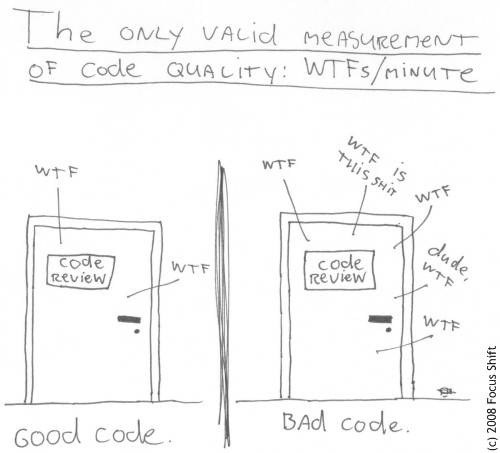

Kent Beck
Changer la structure interne sans changer le comportement externe.
code smells, emergent design, pair programming, real options, ddd, bounding context, specification by exemple, impact mapping, iteration, SOLID, clean code, clean architecture, clean coders,